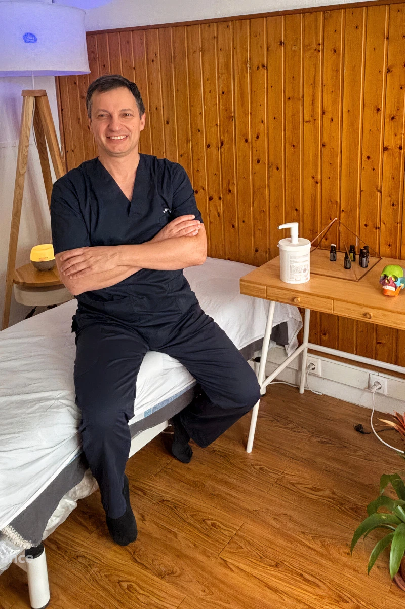
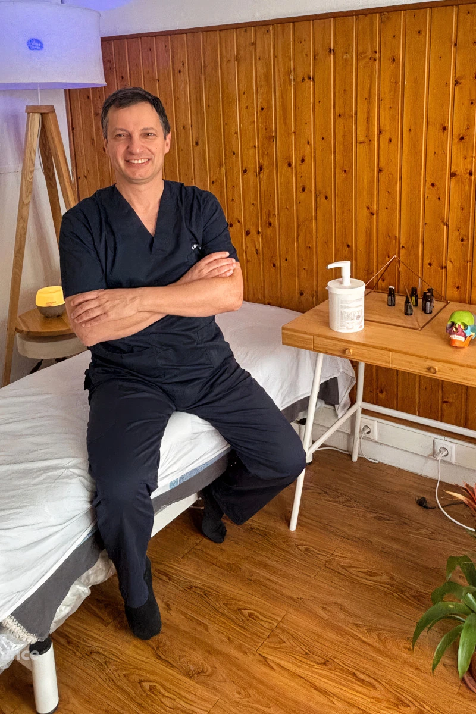

Massoterapia Funcional
Alívio de dores musculares e melhoria da mobilidade.
O alívio das dores começa com um toque especializado.
 

Sou terapeuta manual há mais de 20 anos, especialista em integrar técnicas ancestrais com princípios da osteopatia moderna. O meu foco é ajudar a reduzir dores crónicas, melhorar a mobilidade e devolver autonomia ao corpo.
Desde que comecei na terapia manual, sempre acreditei que o toque é mais do que uma técnica – é uma ferramenta de comunicação com o corpo. Hoje, o meu trabalho une técnicas ancestrais e princípios osteopáticos modernos, respeitando a evidência científica e a individualidade de cada pessoa.
A própria OMS reconhece o valor da terapia manual, e é dentro desse contexto que trabalho – sem rótulos fixos, mas sempre com um foco claro: ajudar a reduzir a dor e melhorar a qualidade de vida.
Conhecimento aprofundado em terapia manual, combinando ciência e tradição.
Uso de técnicas ancestrais e princípios osteopáticos para um tratamento eficaz.

Ajudo a reduzir dores crónicas, melhorar a mobilidade e devolver autonomia ao corpo.

Cada pessoa é única, sem protocolos rígidos ou soluções padronizadas.
Integro técnicas manuais ancestrais com princípios osteopáticos modernos para reduzir dores crónicas, melhorar a mobilidade e restaurar o equilíbrio do corpo.
Alívio de dores musculares e melhoria da mobilidade.

Equilíbrio do sistema nervoso e alívio de tensões.
Técnicas suaves para melhorar a mobilidade dos órgãos.
Estimulação de pontos nos pés para equilíbrio do corpo.